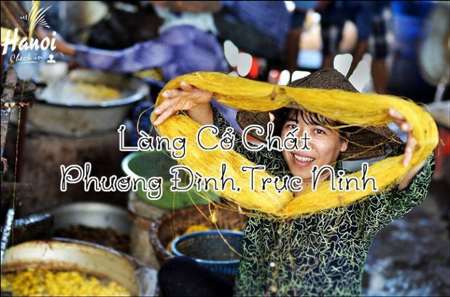
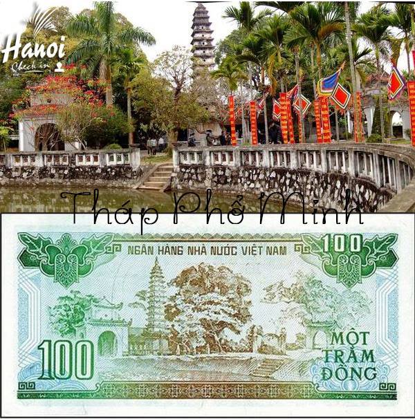
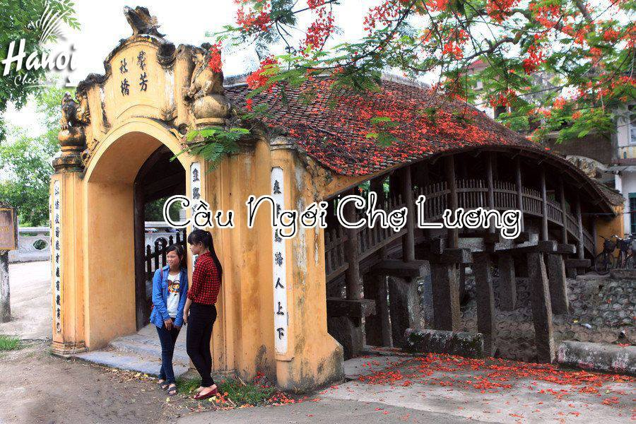
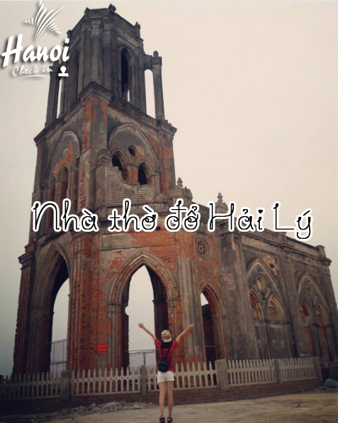

Địa điểm check in tuyệt đẹp tại Nam Định
1. Làng Cổ Chất (xã Phương Đình, Trực Ninh, Nam Định)
Nằm bên dòng sông Ninh Cơ có nghề nuôi tằm, trồng dâu, ươm tơ, dệt lụa nổi tiếng khắp cả nước. Ngày nay, làng nghề đã bị mai một đi nhiều, chỉ còn ít hộ còn giữ được quy trình chế biến thủ công
2. Cồn Lu – Cồn Cạn
là khu rừng ngập mặn thuộc huyện Giao Thủy cách thành phố Nam Ðịnh 60 km về phía đông nam. Với diện tích 7785 ha, đây là rừng sinh thái ven biển tự nhiên khá tiêu biểu với rất nhiều loại động thực vật quý. Năm 1989 UNESCO đã chính thức công nhận khu Cồn Lu-Cồn Ngạn được tham gia Công ước RAMSAR về bảo tồn tự nhiên.

3. Tháp Phổ Minh
Được xây dựng từ thời Lý. Năm 1262 vua Trần Thái Tông cho mở rộng với qui mô lớn hơn và trong đó có tháp Phổ Minh. Đây là nơi tu hành, tụng niệm của các quan lại, quý tộc nhà Trần. Toàn thể ngôi chùa được bố trí theo kiểu nội công ngoại quốc và thể hiện rõ dấu ấn hài hòa của ba tôn giáo Nho – Phật – Lão. Trong chùa có nhà thủy tạ, có hồ sen và nhiều cây cổ thụ xum suê. Chùa đã được Bộ Văn hóa công nhận là Di tích lịch sử – văn hóa quốc gia.
4. Cầu Ngói Chợ Lương - một trong ba cây cầu ngói đẹp nhất Việt Nam
Ai qua Cầu Ngói Chợ Lương, Ghé thăm Mỹ nghệ Hải Minh làng nghề, Hoành phi Câu đối Tủ chè, Đi lên đổi mới diệu kỳ sáng tươi. Đến Cầu Ngói Chợ Lương ( mới được tu sửa năm 2010) thuộc xã Hải Anh, huyện Hải Hậu, tỉnh Nam Định là Quý vị đã đến điểm đầu của làng nghề Hải Minh ( xã Hải Minh, huyện Hải Hậu)
5. Nhà thờ đổ Hải Lý
Dù đã bị phá hủy, nhà thờ đổ ở bờ biển xã Hải Lý vẫn là một trong những điểm đến yêu thích của khách du lịch gần xa. Nằm khép mình bên bãi biển hoang sơ, nhưng nhà thờ đổ Lý Hải vẫn mang trong mình những điều bí ẩn, hoang sơ mà không một du khách nào có thể cưỡng lại nổi khi tới nơi đây
